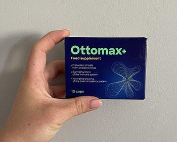

Všeobecné smluvní podmínky
Přijetí podmínek
Používáním
(dále jen „web“, „my“ nebo „nás“) vyjadřujete svůj souhlas s těmito
podmínkami. Pokud s těmito podmínkami nesouhlasíte, nepoužívejte prosím náš web. Vyhrazujeme si
právo tyto zásady kdykoli upravit, upravit nebo jinak aktualizovat. Doporučujeme návštěvníkům, aby
si občas přečetli tyto podmínky. Vaše další používání webu po zveřejnění změn těchto podmínek
znamená, že tyto změny přijímáte.
1. Váš účet
Pokud si vytvoříte účet na našem webu, jste zodpovědní za udržování bezpečnosti svého účtu a jste
plně
zodpovědní za všechny činnosti, které se v rámci účtu vyskytnou, a za jakékoli další akce přijaté v
souvislosti s tímto účtem. Souhlasíte s poskytováním a udržováním přesných, aktuálních a úplných
informací, včetně vašich platebních údajů a kontaktních údajů pro oznámení a další sdělení od nás. V
souvislosti s vaším účtem nesmíte použít nepravdivé nebo zavádějící informace.
Odpovědnost uživatelů stránek, produktů a / nebo služeb
Váš přístup ke stránkám, produktům a / nebo službám a jejich používání musí být zákonné a musí být v
souladu s těmito podmínkami a jakoukoli další dohodou mezi vámi a námi.
Při přístupu nebo používání webu, produktů a / nebo služeb se musíte vždy chovat slušně a zdvořile.
Konkrétně zakazujeme jakékoli používání stránek, produktů a / nebo služeb a souhlasíte s tím, že
nebudete
stránky používat pro následující účely:
- Zapojení do jednání, které by představovalo trestný čin, vedlo k občanskoprávní odpovědnosti nebo
jinak porušovalo jakékoli městské, státní, národní nebo mezinárodní právo nebo nařízení, které by
nebylo
v souladu s přijatým internetovým protokolem;
- Komunikace, přenos nebo zveřejňování materiálu, který je chráněn autorskými právy nebo jinak
vlastněn
třetí stranou, pokud nejste vlastníkem autorských práv nebo nemáte povolení vlastníka k jeho
zveřejnění;
- Sdělování, přenos nebo zveřejňování materiálu, který odhaluje obchodní tajemství, pokud je
nevlastníte nebo nemáte svolení vlastníka;
- Sdělování, přenos nebo zveřejňování materiálu, který porušuje práva duševního vlastnictví,
soukromí
nebo publicity jiného;
- Pokusit se jakýmkoli způsobem zasahovat na Web, do našich sítí nebo zabezpečení sítě, nebo se
pokoušet
používat náš Web k získání neoprávněného přístupu k jakémukoli jinému počítačovému systému;
- Přístup k údajům, které pro vás nejsou určeny, nebo přihlášení k serveru nebo účtu, ke kterým
nemáte
oprávnění;
Kromě toho, pokud provozujete účet, přispíváte na účet, zveřejňujete materiál na webu, zveřejňujete
odkazy na webu nebo jinak zpřístupňujete materiál prostřednictvím webu (jakýkoli takový materiál,
„obsah“), nesete výhradní odpovědnost za obsah a jakékoli škody a škody vyplývající z tohoto obsahu
bez
ohledu na to, zda dotyčný obsah představuje text, grafiku, zvukový soubor nebo počítačový software.
Zpřístupněním obsahu prohlašujete a zaručujete, že:
- stahování, kopírování a používání obsahu neporušuje vlastnická práva žádné třetí strany, mimo jiné
autorská práva, patenty, ochranné známky nebo obchodní tajemství;
- plně jste vyhověli všem licencím třetích stran vztahujícím se k obsahu a udělali jste vše potřebné
k
úspěšnému předání všech požadovaných podmínek koncovým uživatelům;
- Obsah neobsahuje ani neinstaluje žádné viry, malware, trojské koně ani jiný škodlivý nebo
destruktivní
obsah;
- obsah není obscénní, urážlivý, nenávistný, rasově či etnicky nevhodný a neporušuje práva na
soukromí
ani publicitu žádné třetí strany.
Jste odpovědni za přijetí nezbytných preventivních opatření k ochraně sebe a svých počítačových
systémů
před viry a jiným škodlivým nebo ničivým obsahem. Přijmeme přiměřená opatření, abychom zabránili
přenosu
škodlivého obsahu z jeho technologických systémů do vašich technologických systémů. Výslovně se
zříkáme
jakékoli odpovědnosti za jakoukoli újmu nebo škody vyplývající z vašeho přístupu nebo používání
stránek,
produktů a / nebo služeb nebo přístupu nebo používání webových stránek třetích stran.
Máme právo (i když ne povinnost) (i) odmítnout nebo odstranit jakýkoli obsah, který podle našeho
rozumného názoru porušuje jakoukoli naši interní politiku nebo je jakýmkoli způsobem škodlivý nebo
nežádoucí, nebo (ii) ukončí nebo odepře přístup k používání webu, produktů a / nebo služeb jakékoli
osobě
z jakéhokoli důvodu podle našeho výhradního uvážení
3. Poplatky a platby
Zakoupením našich produktů a / nebo služeb souhlasíte s tím, že budete za takový produkt nebo službu
platit poplatky nebo roční poplatky za předplatné. Konfigurace a ceny webu, produktů a / nebo služeb
se
mohou kdykoli změnit, a my můžeme upravit konfigurace, poplatky, ceny a nabídky, avšak během období
předplatného pro vás nebudou provedeny žádné změny cen. Ty vstoupí v platnost až poté, co se dohodneme
na
prodloužení, upgradu nebo obnovení doby předplatného. Souhlasíte s jakýmikoli takovými změnami, pokud
písemně nevznesete námitku do sedmi (7) pracovních dnů od přijetí nebo faktury zahrnující nebo
oznamující
změny poplatků a / nebo cen. Všechny ceny jsou výlučné a budete platit veškeré daně, cla, odvody nebo
jiné
podobné poplatky.
4. Použití obsahu a materiálů třetích stran
Provozováním webu nevyjadřujeme ani nenaznačujeme, že souhlasí se zveřejněným materiálem nebo že
uvádí,
že je tento materiál přesný, užitečný nebo nezávadný. Web může obsahovat urážlivý, neslušný nebo jinak
nevhodný obsah, stejně jako obsah obsahující technické nepřesnosti, typografické chyby a další chyby.
Web
může také obsahovat materiál, který porušuje práva na soukromí nebo publicitu; porušuje duševní
vlastnictví a další vlastnická práva třetích stran; nebo jejichž stahování, kopírování nebo používání
podléhá dodatečným podmínkám, uvedeným nebo neuvedeným. Zříkáme se jakékoli odpovědnosti za jakékoli
škody
a / nebo škody vyplývající z použití nebo stahování příspěvků jiných stran na tomto webu.
5. Obsah zveřejněný na jiných webových stránkách
Nekontrolovali jsme a nemůžeme zkontrolovat veškerý materiál, včetně počítačového softwaru,
zpřístupněný
prostřednictvím webových stránek a webových stránek, na které náš web odkazuje, a tento odkaz na náš
web.
Nad těmito webovými stránkami a webovými stránkami třetích stran nemáme žádnou kontrolu a neneseme
odpovědnost za jejich obsah ani za jejich použití. Propojením na webovou stránku nebo webovou stránku
třetí strany nepředstavujeme ani nenaznačujeme, že takovou webovou stránku nebo webovou stránku
podporujeme.
6. Porušení autorských práv
Doporučujeme vám respektovat práva duševního vlastnictví ostatních. Pokud se domníváte, že materiál
umístěný na tomto webu nebo na něj odkazující, porušuje vaše autorská práva, okamžitě nás o tom
informujte. Na všechna taková oznámení budeme reagovat, a to i v případě potřeby nebo vhodnosti
odstraněním materiálu porušujícího autorská práva nebo deaktivací všech odkazů na materiál porušující
autorská práva.
7. Ukončení
Svou smlouvu můžete ukončit a svůj účet u nás kdykoli uzavřít, a to s účinností posledního dne období
předplatného, zasláním e-mailu. Můžeme ukončit svůj vztah s vámi nebo můžeme kdykoli ukončit nebo
pozastavit přístup k webu, produktům a / nebo službám, včetně použití jakéhokoli softwaru, (i) pokud
porušíte tyto podmínky; (ii) pokud máme důvodné podezření, že používáte web, produkty a / nebo služby
k
porušení zákona nebo k porušení práv třetích stran; (iii) pokud nezaplatíte dlužné částky; (iv)
porušíte
jakýkoli platný zákon nebo nařízení. Po ukončení vašeho účtu z výše uvedených důvodů nebude vrácení
poplatků zaručeno a bude vám odepřen přístup na stránky, produkty a / nebo služby, včetně všech jejich
údajů. Pokud se domníváte, že jsme neprokázali dostatečné služby nebo že služby jsou vadné, musíte nás
o
tom písemně informovat a počkat čtrnáct (14) dní na odstranění vady. Pokud během této doby nebudeme
vadu
léčit, můžete předplatné s okamžitou platností ukončit na základě písemného upozornění.
8. Změny
Konfigurace a specifikace webu, včetně a bez omezení veškerého dostupného obsahu, produktů a služeb,
mohou být podle našeho vlastního uvážení čas od času pozměněny a / nebo aktualizovány. Jste vázáni
jakýmikoli takovými změnami nebo aktualizacemi, pokud tyto změny podstatně nesníží funkčnost a hodnotu
stránek, produktů a / nebo služeb.
9. Zvláštní poznámka týkající se dětí
Web není navržen ani určen pro použití dětmi mladšími 16 let a naše produkty a služby nemusí být
zakoupeny dětmi mladšími 16 let. Úmyslně neshromažďujeme osobní údaje od návštěvníků mladších 16 let
Pokud
jste mladší 16 let, nesmíte nám poskytovat žádné osobní údaje. Pokud je vám méně než 16 let, měli
byste
stránky používat pouze se souhlasem rodiče nebo zákonného zástupce.
10. Omezení záruk
My a naši poskytovatelé licencí neposkytujeme žádné záruky ani prohlášení, pokud jde o web, produkty a
služby nebo jakýkoli odkazovaný web nebo jeho obsah, včetně obsahu, informací a materiálů na něm, ani
přesnosti, úplnosti nebo včasnosti obsahu, informace a materiály. Rovněž nezaručujeme, že váš přístup
nebo
používání webu, produktů a / nebo služeb nebo jakýchkoli propojených stránek bude nepřerušovaný nebo
bez
chyb či opomenutí, že budou opraveny vady nebo že web, produkty a / nebo služby nebo jakékoli
odkazované
stránky neobsahují počítačové viry ani jiné škodlivé součásti. Nepřebíráme žádnou odpovědnost a
nebudeme
odpovídat za jakékoli škody nebo viry, které mohou infikovat vaše počítačové vybavení nebo jiný
majetek v
důsledku vašeho používání produktů nebo služeb nebo vašeho přístupu, používání nebo procházení webu
nebo
vaše stahování nebo nahrávání jakéhokoli obsahu z webu nebo na něj. Pokud nejste spokojeni se
stránkou,
jediným řešením je přestat ji používat.
Žádné rady, výsledky nebo informace, ať už ústní nebo písemné, získané od nás nebo prostřednictvím
webu,
nevytvoří žádnou záruku, která zde není výslovně uvedena. Nezbytně nepodporujeme, ani nesouhlasíme s
žádným obsahem ani s jakýmkoli obsahem uživatele, ani s jakýmkoli názorem, doporučením, obsahem,
odkazem,
údaji nebo radou v nich vyjádřenými nebo implicitními, a výslovně se zříkáme veškeré odpovědnosti v
souvislosti s uživatelským obsahem a jakýmkoliv jiným obsahem, materiály nebo informacemi dostupnými
na
nebo prostřednictvím stránek, produktů a / nebo služeb, vytvořené nebo poskytované uživateli nebo
jinými
třetími stranami.
11. Omezení odpovědnosti
Žádná strana, její dceřiné a přidružené společnosti, jejich příslušní ředitelé, vedoucí pracovníci,
zaměstnanci nebo zástupci za žádných okolností nenesou odpovědnost za jakékoli nepřímé, následné,
náhodné,
zvláštní nebo represivní škody, mimo jiné za ušlý zisk a přerušení podnikání, ať už ve smlouvě nebo v
deliktu, včetně nedbalosti, vyplývající jakýmkoli způsobem z používání webu, produktů, služeb a / nebo
jejich obsahu nebo jakéhokoli hypertextového odkazu, i když je tato strana výslovně upozorněna na
možnost
takových škod. S výjimkou škod souvisejících s právně prokázaným nebo přiznaným porušením duševního
vlastnictví způsobeným produkty a / nebo službami poskytovanými stranou bez obsahu třetí strany nesmí
odpovědnost strany v žádném případě překročit celkové částky, které od nás obdržíte během období šesti
(6)
měsíců bezprostředně před datem, kdy došlo k prvnímu poškození.
12. Vaše prohlášení a záruky
Prohlašujete a zaručujete, že vaše používání stránek, produktů a / nebo služeb bude v souladu s
jakoukoli
dohodou mezi vámi a námi, zásadami ochrany osobních údajů, těmito podmínkami a jakýmikoli příslušnými
zákony a předpisy, včetně a bez omezení na jakékoli místní zákony nebo předpisy ve vaší zemi, státě,
městě
nebo jiné vládní oblasti, týkající se chování online a přijatelného obsahu, včetně všech příslušných
zákonů týkajících se přenosu technických údajů exportovaných ze země, ve které sídlíte, a jakýchkoli
dalších příslušných zásad nebo pravidel a podmínek.
13. Odškodnění
S výhradou omezení stanovených v tomto dokumentu se smluvní strany dohodly, že se budou navzájem
bránit,
odškodňovat a navzájem chránit, včetně svých dceřiných a přidružených společností, jejich příslušných
ředitelů, vedoucích pracovníků, zaměstnanců nebo agentů a dalších zástupců, před a proti všem nárokům,
ztrátám, škodám, závazkům a nákladům (včetně, ale nejen, přiměřených poplatků za právní zastoupení a
soudních nákladů), které vyplývají z, v souvislosti s nebo v souvislosti s (i) podstatným porušením
těchto
podmínek nebo jakýchkoli dohod mezi stranami, nebo ( ii) jakýchkoli obvinění, že jakékoli informace
nebo
materiály (včetně jakéhokoli obsahu) porušují jakákoli práva jakékoli třetí strany.
Berete na vědomí a souhlasíte s tím, že používáním produktů a / nebo služeb nesete výhradní
odpovědnost
za veškerá data, včetně osobně identifikovatelných informací, shromážděná nebo zpracovaná
prostřednictvím
našich produktů a / nebo služeb. Budete nás hájit, odškodňovat a udržovat nás v bezpečí, bez
jakéhokoli
omezení, za všechny škody v souvislosti s (údajným) porušením jakýchkoli zákonů o ochraně osobních
údajů
používáním produktů a / nebo služeb pod vaším účtem.
14. Různé
Pokud bude jakákoli část těchto podmínek shledána neplatnou nebo nevymahatelnou, bude tato část
vykládána
tak, aby odrážela původní záměr smluvních stran, a zbývající části zůstanou v plné platnosti a
účinnosti.
Zřeknutí se kterékoli podmínky kterékoli z těchto podmínek nebo jakéhokoli jejich porušení, kteroukoli
ze
stran, v žádném případě nezruší takovou podmínku ani jakékoli jejich následné porušení. Vaše práva
podle
těchto podmínek můžete postoupit pouze straně, která písemně souhlasí s těmito podmínkami a souhlasí s
tím, že jimi bude vázána. Můžeme převést tato práva podle těchto podmínek na základě vlastního
uvážení.
Tyto podmínky budou závazné a zajistí se ve prospěch stran, jejich nástupců a povolených převodců.
Souhlasíte s tím, že mezi vámi a námi neexistuje žádný společný podnik, partnerství, zaměstnání ani
agenturní vztah v důsledku podmínek nebo vašeho používání stránek, produktů a / nebo služeb.
Komentáře
OBJEV: 10 let utrpení kvůli tinnitu. Slyšela zvuky, které nebyly. Neuvěříte, co jí pomohlo
Přidat komentář
Zajímalo by mě, jestli mi to pomůže. Použival ho někdo?
Jo, absolvoval jsem kurz. Tinnitus opravdu zmizel. Objednejte si to, nebudete litovat!!!)))
Bolela mě hlava už pět let. Zpočátku se děti dokonce bály, že mám nádor na mozku. A ukázalo se, že bylo to kvůli špatnému sluchu a tinnitu! Po 3 týdnech užívání přípravku poprvé po mnoha letech mě přestala bolet hlava. Je to takové štěstí!

Byla jsem na desítkách konzultací s renomovanými odborníky a nikdo mi nemohl pomoci. Říkali, že se s tím musíme smířit a naučit se s tím žít. Chtěla bych mít takový život! Dozvěděla jsem se o z časopisu, koupila jsem si to. O týden později tinnitus zmizel, o týden později jsem začala lépe slyšet, a o měsíc později už jsem nemusela všech prosit aby mi to zopakovali se. Snížila jsem hlasitost v televizi! Neumíte si představit, jak jsem šťastná!
Hledala jsem prostředek pro tátu, nechtěl chodit se sluchadlem. Řekl mi, že je to velmi nepříjemné a do konce neřeší problém. Koupila jsem na doporučení odborníka. Táta je spokojený. Teď říká, abychom tak nekřičeli, slyší nás dobře)
Moje babička také používala a on jí velmi pomohl, teď s ní mohu mluvit i šeptem. Jak je dobré, když jsou blízcí zdraví!
Když jsem měla tinnitus, myslela jsem, že mám psychické problémy. Byla jsem velmi vyděšená. Pak si na ně postupně zvykla, ale samozřejmě je to nepříjemné. Pokud tyto kapsle opravdu pomáhají, měli byste to zkusit. Objednám si to.
Šel jsem na soukromou kliniku, absolvoval jsem tam kurz, ale bez úspěchu. Nemůžu spát, kvůli tinnitu. Poslední nadějí jsou tyto kapsle. Už jsem koupil , doufám, že to bude fungovat.
Moje matka měla problémy s tinnitem po terapii antibiotiky, byla po celou dobu ve stresu, ale s se cítila mnohem lépe.
Líbilo se mi složení, nic extra, všechno přirozené. Účinek nenastává první den, ale postupně. Jako všechno přírodní. Doporučila mi to přítelkyně, varovala mě, že již ve 2. týdnu přijetí uvidím účinek . Tak to dopadlo. Začala jsem lépe a jasněji slyšet!
Kde si ho mohu objednat?
Odkaz na web je pod článkem, podívejte se znovu.
Beru již 3 týdny a jsem naprosto šokován. Slyším jako nikdy předtím!

Mimochodem, cena je velmi přijatelná. Drahý produkt bych si nemohla koupit.
Pro mě osobně cena není hlavní, pro mě je důležité, že produkt opravdu funguje. Kolega z práce ho bral, chválil. Ještě že jsem tento článek našla na internetu!